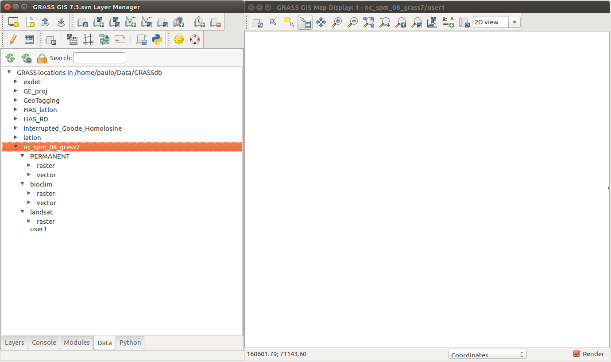
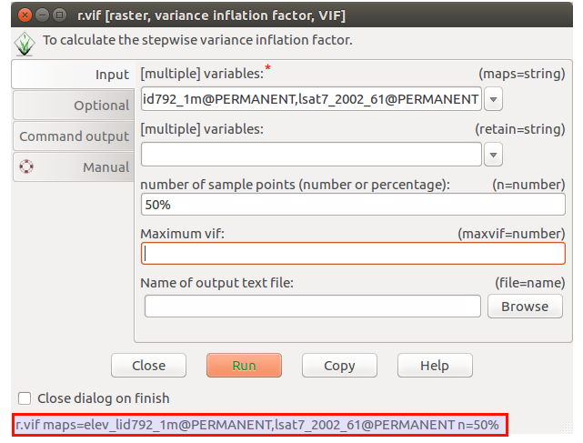
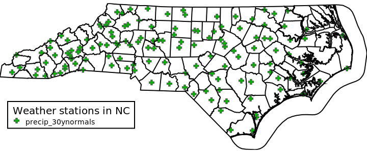
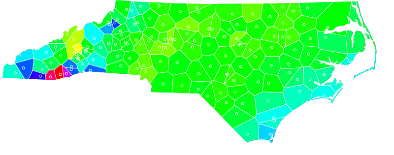
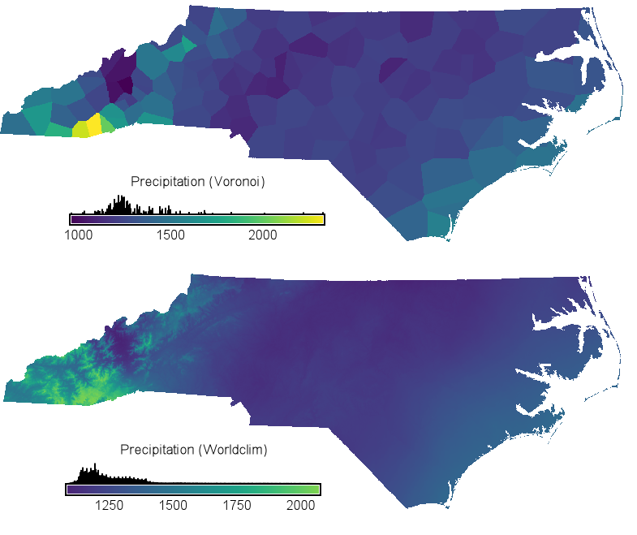
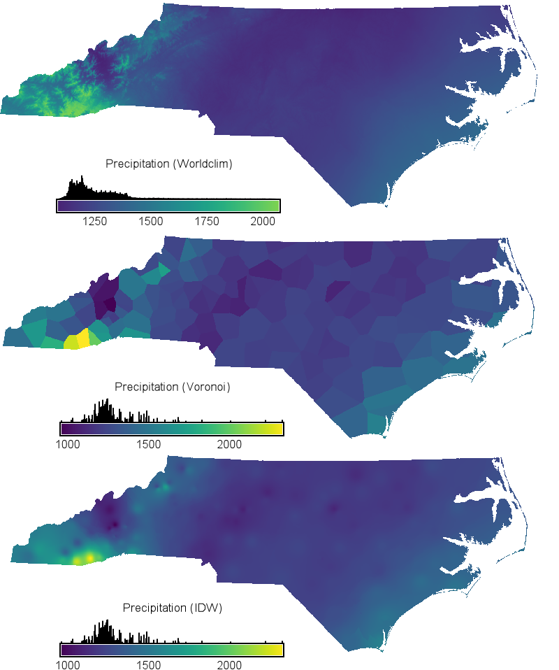
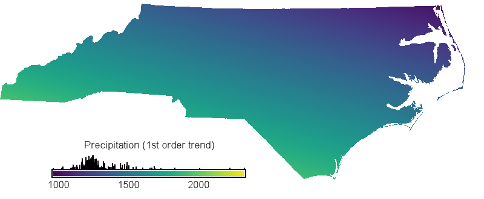
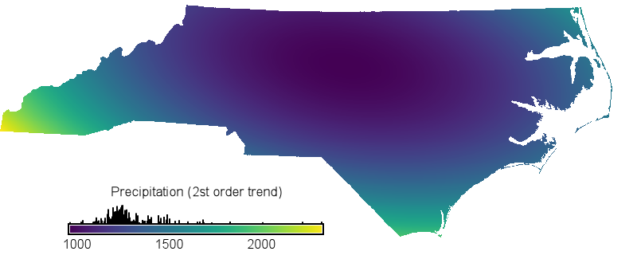
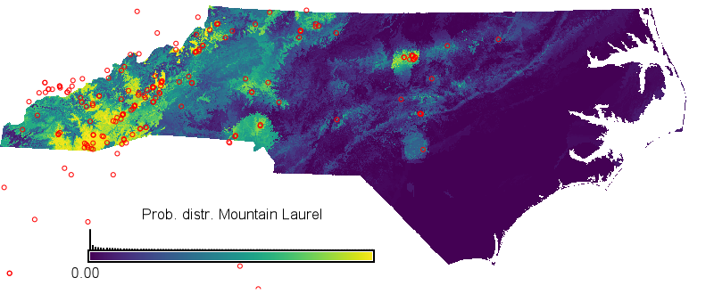

Spatial interpolation in GRASS GIS
1 Introduction
This tutorial was developed as part of the course Hands-on to GIS and Remote Sensing with GRASS GIS at ITC - University of Twente on November 3rd, 2017. The course, organized by ITC and OSGeo.nl, offered a very nice introduction to GRASS GIS by Veronica Andreo, a guided tour about working with GRASS GIS by Sajid Pareeth and three modules with hands-on exercises, including this tutorial about spatial interpolation in GRASS GIS. The other two modules are Raster time series in GRASS GIS: MODIS Land Surface Temperature by Veronica Andrea and Remote sensing analysis in GRASS GIS by Sajid Pareeth.
1.1 Overview
This module aims to provide a short introduction to some of the functions and tools to carry out spatial interpolation in GRASS GIS, including a number of exercises. Note you are expected to have some background knowledge about spatial analysis in general and the use of spatial interpolation specifically. A (very) brief introduction to spatial interpolation is provided in chapter 2, while chapter 3 provides an overview of spatial interpolation options in GRASS GIS. For more information about spatial interpolation methods, see e.g., the references listed at the end of this tutorial, but also the references in the manual pages of the individual GRASS modules.
Chapter 4 provides information about the requirements for this tutorial and an explanation of the steps you need to follow to be ready for the exercises. In chapter 5 and 6, you will go through a number of exercises for respectively spatial and environmental interpolation techniques that are available in GRASS GIS. In each of the exercises, you will be shown how to run one or more functions using the command line and/or GUI interface (and where relevant in Python).
1.2 Doing the exercises
You'll find various exercises in chapter 4 - 6. They are marked with the icon question mark icon. Clicking on the links in the boxes directly below the question will give you worked out example of the exercise in Bash, and in some cases in Python or using the GUI as well.
It is recommended that you first try to do the exercise yourself. In most cases, some hints are provided, such as the function you should use. If you are not familiar with a function, check out its manual page. Besides an explanation of the parameters, it often contains an example, which is a great way to quickly get an idea how to use the function.
If have comments or questions related to this tutorial, you can contact me through the contact form (see side menu). If your questions are more related to GRASS GIS in general, I would strongly suggest to send an email to the GRASS GIS mailing list. There is a dedicated and very friendly community of GRASS users and developers that might be able to help you. Just make sure to follow the guidelines on the mailing list etiquette. This will maximize the change that somebody can and is willing to help you out.
2 Spatial interpolation, a background
Spatial interpolation is the procedure of predicting the value of attributes at unsampled sites from measurements made at point locations within the same area or region (Burroughs & McDonnell, 2015). The purpose is often to estimate a continuous surface based on known values in sampled points (Figure 1). For example, given a distribution of point meteorological stations showing precipitation values, how I can I estimate the precipitation values in the rest of the country?

Figure 1. Spatial point interpolation of annual rainfall data in North Carolina.
Geographic interpolation is based on Tobler's (1970) first law of geography, namely that Everything is related to everything else, but near things are more related than distant things. For example, if you have the altitude of a number of locations, you can use these to build a new elevation surface. Spatial interpolation is generally carried out by estimating a regionalized value at unsampled points based on a weight of observed regionalized values in neighboring locations. The general formula for spatial interpolation is as follows:
Vg is here the interpolated value at point g, Zsi is the observed value at point i, N is the total number of observed (neighboring) points and λi is the weight contributing to the interpolation. The challenge lies in calculating the weights, λ, which will be used in the interpolation (Ly et al. 2013).
Values in point can be estimated based on the neighboring points using deterministic interpolation or geostatistical methods. Deterministic methods are based on surrounding measured values and specific mathematical formulas that determine the shape and smoothness of the resulting surface. Geostatistical methods are based on statistical models that include the statistical relationship between observed points (spatial autocorrelation) and, in some cases, trends in the dataset. GRASS GIS offers both deterministic and geostatistical methods.
A different approach altogether is to use correlative models to interpolate (predict) the value of a certain variable based on the value of a set of explanatory variables. An example is the use of environmental niche (or environmental distribution) modeling to predict the distribution or abundance of species, using environmental variables as predictors (explanatory variables). Another domain in which correlative and machine learning approaches are used is remote sensing. In GRASS GIS, there are a few simple correlative methods, such as linear and multiple linear regression. More advanced methods, including machine learning approaches, are offered in the r.learn.ml addon.
3 Interpolation in GRASS GIS - an overview
Interpolation techniques can serve different purposes. When working with rasters of different resolutions, you will come across different resampling and interpolation methods used for down- or upscaling. Than, there is the interpolation of scattered points of lines to create a continuous raster surface, which is the focus of this tutorial. First, let's quickly have a look at what functions are available for the interpolation methods to resample raster layers that are available in GRASS GIS (section 2.2), and for the interpolation of scattered points (section 2.3).
3.1 Re-interpolation when up- or downscaling
You will often find that not all raster layers come at the same resolution. Or your raster layers may not match the desired resolution of your output layers. In GRASS GIS, transformation of a raster map to a different resolution is performed automatically (on the fly) whenever the region resolution settings are changed. This is done by simple resampling using the nearest neighbor method. This is useful for rasters representing discrete categories.

Figure 2. Resampling functions available in GRASS GIS. Click to view at full size.
Changing resolution of raster maps that represent continuous fields requires other types of interpolation (Neteler & Mitasova 2008). There are various functions available in GRASS GIS. They can be found in the Raster - Develop raster map menu (Figure 2) and can be divided in two groups:
3.2 Reinterpolation of "sparse" (scattered points or lines) maps
Spatial interpolation methods can be grouped in deterministic and statistical interpolation methods. In addition, there are the statistical multivariate analyses, which use one or more predictor variables to predict the values of the dependent variables. The methods available in GRASS GIS (as core function or using an addon) are listed below. In addition, one can relatively easily use any of the many interpolation techniques and functions available in R, amongst others. In fact, the v.krige function, for example, using R in the background.
3.2.1 Deterministic Approach to Interpolation
Deterministic interpolation methods use mathematical functions to calculate the values at unknown locations based either on the degree of similarity or the degree of smoothing in relation with neighboring data points. For more information about the methods and documentation, follow the link to read the manual pages.
3.2.2 Statistical interpolation methods
The second group of spatial interpolation methods use statistical methods involving autocorrelation to predict values at all locations within region of interest and to provide probabilistic estimates of the quality of the interpolation based on the spatial autocorrelation among data points. This group of geostatistical techniques is called Kriging. There are several types of Kriging, two of which are available in GRASS GIS through two different addons (see list below).
3.2.3 Statistical multivariate interpolation
A different approach altogether is to predict the value of a certain variable based on auxiliary variables using multivariate modeling techniques. Examples of such methods are regression and machine learning techniques. In GRASS GIS a few methods are available.
3.2.4 Combining trend and spatial autocorrelation
There are also approaches that assume point values are influenced by a trend in the data as well as spatial autocorrelation. An examples is universal kriging. This function is not available in GRASS GIS. An alternative is to first describe the trend using a deterministic trend function (polynomial function). Next, the predicted trend surface is subtracted from the original measured points, and the autocorrelation is modeled from the random errors. Once the model is fit to the random errors and before making a prediction, the polynomial or correlative model is added back to the predictions to give meaningful results (Hengl 2008).
Trends or spatial patterns will often be related to environmental gradients. Regression and machine learning approaches can be used to model the interaction between environment and the variable of interest. However, these functions ignore possible spatial autocorrelation in a given data set. Regression kriging provides an alternative approach in which regression (based) models are used to estimate the deterministic part of the variation in a variable, after which the residual can be interpolated with kriging. I.e., they incorporate information on position of the sample data points in environmental and geographic space. For the final estimation, the output of both are summed up (Hengl 2007).
4 Getting things started
4.1 Setting up the database
In this tutorial, we will be working with the North Carolina data set. You can download this data set from the GRASS GIS website (150 MB). To use this data set, you will first need to find out the path to your GRASS GIS database. Next, unzip the file you just downloaded and place the folder within your GRASS GIS database. So, if the path to your GRASS GIS database is /home/user/grassgis/ (on Windows, this could be for example c:\data\grassgis), copy the NC folder to that folder.
In the North Carolina (NC) data set, there are a large number of vector and raster layers. You can find them in the PERMANENT and landsat mapset (Figure 3). For the exercises, we should keep these base layers as they are, and store the data we create and adapt in another mapset. You should be able to create a new mapset and to define the region settings of this mapset. If you forgot how, check again Introduction to GRASS GIS and guided tour about working with GRASS GIS.

Figure 3. The mapsets available by default in the NC dataset, complemented by the bioclim dataset (which we will create later).


4.2 Installing required addons
For the exercises in this tutorial, you will be asked to install a few addons. They are all available from the official GRASS GIS Add-on repository. They can be easily installed in the local installation through the graphical user interface (Menu - Settings - Addons Extension - Install) or via the g.extension command. Go to the manual page of g.extension for a more details overview.
4.3 Seeking help
As mentioned in the Introduction module, there are multiple sources from where to get help about GRASS GIS. When in doubt about a function, you should always start with the function's manual page. You can get a basic descriptions of the options and flags of a function using the --help or --h flag after the module name. Or open the manual page from the function's window or online.

When you are new to GRASS or want to try out a new function, one tip is to use the GUI first and explore the different settings. If you then want to use this function on the command line (perhaps as part of a larger work-flow), you can easily copy the corresponding code to the clipboard (Figure 12). You can open the function GUI via the menu, or you can simply type the function name on the command line and press enter.

Figure 12. Get the command line code based GUI parameters. Use the Copy button to copy the command line to the clipboard.
5. Hands-on geographic point interpolation
In this section, we will look at a few of the interpolation functions in GRASS GIS. This should provide you with some ideas what is possible and make it easier to understand how to employ the full power of GRASS GIS. If you would like to try out a function that is not included in the exercises below, ask and we'll try to help you out.
5.1 Rainfall data
In the North Carolina (NC) data set, there is a vector point data layer with in the attribute table the average monthly and annual rainfall data for the period 1970 - 2000; the precip_30ynormals@PERMANENT vector layer. Note that the name after the at (@) sign is the name of the mapset in which the layer is stored. Let's first have a look at the data layer. Let's first have a look at the data.
Now, to display the map and add decorations, we can run the commands from the command line or use the main GUI and copy the corresponding commands for future replication of the workflow. Note the "Copy" button in the GUI of each module.

Figure 13. Weather stations in NC
5.2 Proximity interpolation - Voronoi polygons
This is probably the simplest interpolation method. It was introduced by Alfred H. Thiessen more than a century ago. The goal is simple: Assign to all unsampled locations the value of the closest sampled location. This generates voronoi polygons whereby lines that split the midpoint between each sampled location are connected. They thereby form a polygon that encloses the sample point whose value it inherits (Gimond 2017). The method can be used for vector to raster conversion for special cases, e.g., when resulting raster layers need to be discrete and only have those discrete values assigned to the points (Neteler & Mitasova 2008).

Figure 14. Annual rainfall based on proximity interpolation of average rainfall data for the period 1970 - 2000, clipped to the state boundaries. The voronoi polygons are emphasized using a white boundary. White circles give te location of the weather stations.
Most other interpolation techniques in GRASS GIS have as output raster instead of vector layers. To be able to compare layers, we need to convert the Voronoi vector layer to a raster layer first. Let's do that first. And, since we did not create any other interpolated layer yet, let's compare the resulting raster layer with the Worldclim annual rainfall data. To download and importing the data, follow the steps in the tutorial import Bioclim data. Alternatively, download ready-to-use mapset and unzip it within the nc_spm_08_grass7 location (look for the folder of that name in your grass database). The layer we are looking for is the bio12 layer (mean annual rainfall).

Figure 16. Comparing the annual rainfall distribution based on the NC weatherstation interpolated values and the bio12 map from Worldclim


Before we go to the next interpolation technique, there is actually another way to do a proximity interpolation with r.grow.distance

{kind=link}
{kind=link}
{kind=link}
{kind=link}
{kind=link}
{kind=link}
{kind=link}
{kind=link}
{kind=link}
{kind=link}
{kind=link}
{kind=link}
{kind=link}
{kind=link}
{kind=link}
{kind=link}
{kind=link}
Thiessen’s method was very practical in his days when computers did not exist. But today, computers afford us more advanced methods of interpolation as we will see next.
5.3 Interpolation using Inverse Distance Weighted (IDW)
The inverse distance weighted (IDW) technique computes an average value for unsampled locations using values from nearby weighted locations. The weights are proportional to the proximity of the sampled points to the unsampled location and can be specified by the IDW power coefficient. The larger the power coefficient, the stronger the weight of nearby points (Gimond 2017).
In GRASS GIS, there are three functions to compute the IDW, namely v.surf.idw, r.surf.idw, and r.surf.idw2 (addon). They all have their own specific advantages, so you should read the manual pages carefully before making a choice. In the exercise below, we will look at r.surf.idw, as this functions can also generate a error-map using cross-validation.
Your map should like look like the third one in figure 22. As you can see, the overall patterns are similar. The differences are clear as well. The IDW surface is much smoother than that of the Voronoi polygon surface. Both miss the fine-scale patterns in the southwestern highlands which we can see on the Worldclim data layer, and which are related to the topographic patterns in that part of the state.

Figure 23. Estimated annual rainfall surface based on, from top down, Worldclim, and Voronoi polygon and IDW approaches.
{kind=link}
Up to this point, we have used the default parameter settings (number of neighboring points and the exponent. Next step, which I will leave to you, is to design an experiment that elucidates the impact of IDW parameters on the surface. For example, run the IDW interpolation using different combinations of the exponent (e.g., power=0.5, 1, 2.5, 5) and the number of neighboring points (e.g., npoint=1, 5, 20, 60). Each time, also run the cross validation to assess the relative predictive performance. You can also visualize the different maps to see where the differences are.
5.4 Trend surface
A trend surface model is regression models with two independent variables, the X and Y coordinates, and a dependent variable, which is the thematic variable to be modeled (rainfall for example). The model can be linear regression function (first order), or if you want to model a more complex spatial patters, a polynomial function (2nd, 3rd, nth order). (Barboux & Collet 2012). For example, The first order surface polynomial is a slanted flat plane whose formula is given by: Z = a + bX + cY where X and Y are the coordinate pairs. The second order surface polynomial (quadratic polynomial) is a parabolic surface whose formula is given by Z=a+bX+cY+dX2+eY2+XY.
GRASS GIS does not have a dedicated function to compute trend surfaces. However, it is easy enough to create trend surfaces by combining r.mapcalc and r.regression.multi.

Figure 23. First order trend surface of mean annual rainfall
{kind=link}

Figure 24. Second order trend surface of mean annual rainfall
{kind=link}
The first and second order polynomial regression models do not capture much of the details in the spatial distribution of rainfall patterns. The trend surfaces, especially the second order trend surface, does capture a major trend in the rainfall pattern from the highlands in the southwest to the drier central part, after which there is some increase again closer towards the coast. This is important information if we want to use spatial interpolation methods that assume that there is no global trend in the data. An example is ordinary kriging, a commonly used interpolation method.
Thus, if we would like to use ordinary kriging to interpolate our rainfall data (something for a next tutorial), we would need to assume the mean and the variation in the rainfall is constant across the state. This assumption is clearly not met with our NC precipitation dataset as observed above. This means that we could only use ordinary kriging if we first remove the trend from the data (see also section 3.2.4).
5.5 Notes
We have seen three simple geographic interpolation methods. There are more powerful methods available in GRASS, like interpolation with RST (v.surf.rst) and kriging (v.krige and v.kriging). However, these require more fine tuning and deeper understanding of geostatistics. It is something I am planning for a next tutorial. However, if you are familiar with one or more of these techniques, you should by now be able to run these functions in GRASS GIS yourself.
An important aspect in interpolation is the evaluation of your interpolation model to assess the accuracy and predictive power. Some of the above mentioned modules have options to carry out cross-validation. Examples are r.surf.idw and v.surf.rst. However, it is fairly easy to create your own cross validation routine in e.g., Python or R. If you want to get an idea how to do this, you can read this short tutorial / demonstration of using basic Python code to create a cross validation routine.
6 Hands-on environmental interpolation
GRASS GIS offers some functionality to carry out environmental point interpolation, more often referred to as environmental or niche modeling. These are models with one or more environmental variables as independent (also called predictor) variables and a dependent variable to be explained or predicted by the model. One is the multiple linear regression function we used above. Another is the geographically weighted regression from raster maps (r.gwr addon).
Fairly recent, an addon (r.learn.ml) was developed that offers various state of the art regression and machine learning techniques, based on the python scikit-learn package. This package can be used for e.g., predicting the distribution of plant or animal species based on observed occurrences. Another application is for the classification of satellite images. In the manual page of this addon you can find an example of the latter.
6.1 Example data
In our exercise below, we will use the r.learn.ml package to model the distribution of the species Mountain Laurel (Kalmia latifolia), using bioclimatic variables as predictors. We imported the bioclim variables earlier in this tutorial. As you may remember, there are 19 variables. As these are all variables computed based on the monthly rainfall and temperature data (see here how), they are all to some extend correlated. This may cause issues when modeling, as briefly explained here. The first step therefore be to use the variance inflation factor selection procedure to select variables with sufficient low multicollinearity.
We will use the distribution point data of of the species Mountain Laurel (Kalmia latifolia) from the GBIF database. There are various ways to import GBIF data, including directly from the website as comma delimited file (csv) and using the v.in.gbif addon for GRASS. I already downloaded the data for you, using the rgbif package in R, as explained here. The data can be downloaded here as a GRASS pack archive file. You can use the r.unpack function to import this vector point data layer. The layer with the distribution point data is called KLdistribution.
6.2 A quick glance at the l.learn.ml
Here we are going to use r.learn.ml for species distribution modeling, also known as ecological or environmental niche modeling. This is essentially the construction of a spatial model of distribution given a set of sample occurrences and their respective environmental values. In our case, this would be the sample occurrences of the species Mountain Laurel (Kalmia latifolia) and the values of the bioclim variables (the ones we selected earlier) in those locations.
The r.learn.ml addon offers a number of different techniques that can be used for this. We are going to use the RandomForestClassifier. As input, the randomforest function in r.learn.ml needs a raster or vector layer representing the dependent variable. This variable can be a continuous variable (an example would be population numbers) or categorical (an example could be land use categories).
In our case, we only have species presence data, i.e., data points where the species occurs. At the very minimum, we also need data about where the species does not occur. Unfortunately, we do not have this information. An often used solution is to create pseudo absence or background points. For an explanation of these concepts, see e.g., here. In short, pseudo absence points are points selected randomly across the study areas (excluding the locations where the species is known to occur).
We can now use the presence / absence layer we just created as input (dependent variable) in our randomforest model. Remember that as independent (predictor) variables, we use the bioclim variables we selected earlier with the stepwise VIF selection procedure.

Figure 25. The probability distribution of Mountain Laurel (Kalmia latifolia) in North Carolina, overlaid with the recorded species occurrence locations.
{kind=link}
Note that this is just one of the options this addon offers. You can choose from a number of different models. In addition, it offers the option to carry out cross-validation at the model development stage (this is useful to select the best parameter values) and to evaluate the final model output.
6.3 Notes
If you are looking for model approaches not available in GRASS GIS or the r.learn.ml addon, you should checkout if it is available in R (there is a high change it is). It is very easy to run R functions from within GRASS. For example, one can start a R session from the GRASS GIS command line. You can then read and write data from and into your GRASS database, and execute GRASS GIS commands from within R.
A special R package, rgrass7, provides the necessary interface to read and write data from and into GRASS Database, as well as to execute GRASS GIS commands from within R. This allows you to utilize the many different interpolation and machine learning models available in R. More details and examples on both ways of combining GRASS and R can be found in the GRASS and R dedicated wiki page.
7 References
- Burrough, T. late P.P.A., McDonnell, R.A., & Lloyd, C.D. 2015. Principles of Geographical Information Systems. Oxford University Press, Oxford, New York.
- Hengl, T. 2007. A practical guide to geostatistical mapping of environmental variables. JRC Scientific and Technical Reports. European Commission, Joint Research Centre, Luxemburg.
- Regression kriging - https://en.wikipedia.org/wiki/Regression-kriging
- Gimond, M. 2017. Intro to GIS and Spatial Analysis. URL: https://mgimond.github.io/Spatial/index.html
- Neteler, M., & Mitasova, H. 2008. Open source GIS: A GRASS GIS approach. Springer Science+Business Media, New York.
- Tobler, W. R. (1970). A computer movie simulating urban growth in the Detroit region. Economic Geography, 46(2): 234-240.
- Ly, S., Charles, C., & Degré, A. 2013. Different methods for spatial interpolation of rainfall data for operational hydrology and hydrological modeling at watershed scale: a review. BASE. URL: http://www.pressesagro.be/base/text/v17n2/392.pdf
- Hengl 2008. How to use kriging. In: ILWIS (3.5) manual. URL: http://spatial-analyst.net/ILWIS/htm/ilwis/how_to_use_kriging.htm
- Barboux, C. & Collet, C. 2012. Spatial Change Analysis. Geographic Information Technology Training Alliance (GITTA). URL: http://www.gitta.info/SpatChangeAna/en/html/spatial_dist_an_TrendSurf.html

This tutorial was developed as course material for the Hands-on to GIS and Remote Sensing with GRASS GIS course by Veronica Andreo, Sajid Pareeth and Paulo van Breugel. This work is licensed under a Creative Commons Attribution-NonCommercial 4.0 International License.